[3-3] GPIO输入 — 学习笔记
- 课程：江协科技《STM32入门教程-2023版 细致讲解 中文字幕》
- 视频：BV1th411z7sn?p=7，43:58
- 素材：240 帧关键帧（每 11 秒，宽 1280px）+ PP-OCRv4 画面硬字幕 OCR（553 段）；关键截图 14 张随笔记收录（源图在
vidsum_out/stm32_p7/frames/，站内图片在assets/images/stm32-07/） - 字幕情况：该集 B 站没有 CC/AI 字幕，文本由画面烧录的中文字幕 OCR 得到（source=subtitle-ocr），偶有错字已按画面校正。
一句话结论
这一集是 GPIO 输入部分的理论课（本集不写代码，代码在下一集 [3-4]）：先看「按键控制 LED」「光敏传感器控制蜂鸣器」两个现象，再讲清楚 GPIO 输入要面对的硬件——按键消抖（5～10ms）、按键的 4 种接法、传感器模块的“分压 + LM393 比较器”电路和上下拉“杆子+弹簧”模型，最后补 C 语言基础（数据类型/stdint、宏定义、typedef、结构体、-> 指针访问、枚举）。
0. 两个示例程序的现象
| 程序 | 硬件 | 现象 |
|---|---|---|
3-4 按键控制LED |
2 个按键 + 2 个 LED | 按左边按键，左边 LED 点亮/再按熄灭；按右边按键，右边 LED 点亮/熄灭；两个操作互不影响，一个按键控制一个 LED |
3-5 光敏传感器控制蜂鸣器 |
光敏电阻传感器模块 + 蜂鸣器模块 | 用手挡住光敏电阻、光线变暗 → 蜂鸣器响；手拿开、光线变亮 → 蜂鸣器停 |
- 本集只演示现象、不讲这两个程序的代码，代码在下一集 [3-4] 讲。
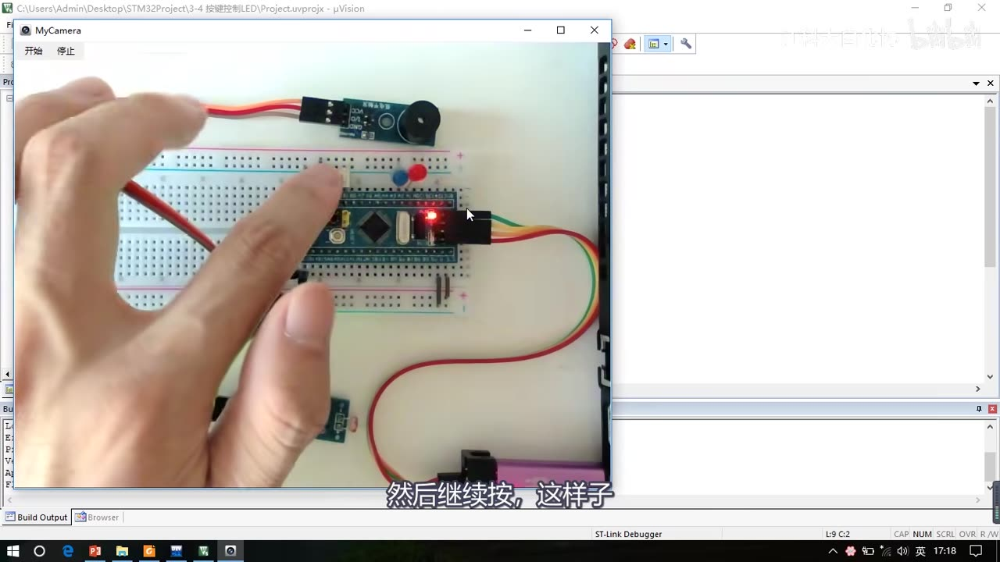
图 1：按键控制 LED 现象——两个按键分别控制两个 LED，互不影响
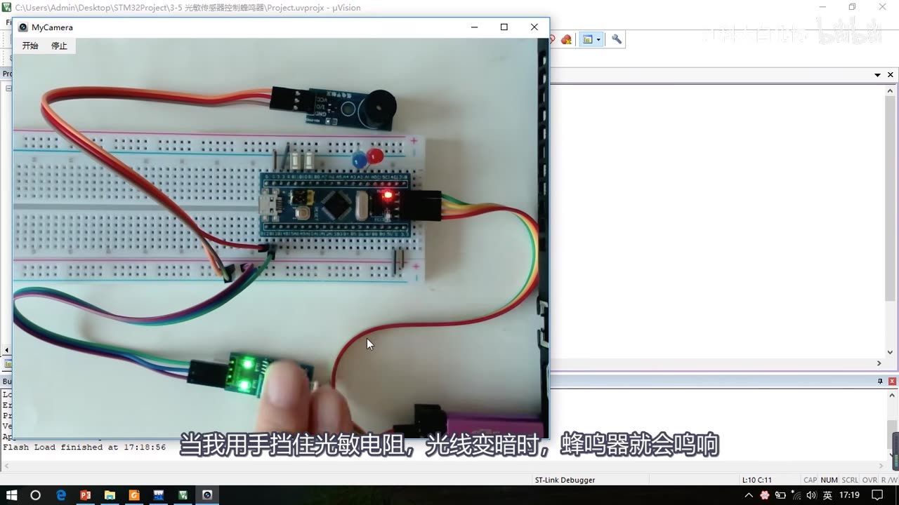
图 2：光敏传感器控制蜂鸣器现象——手挡住光敏电阻时蜂鸣器响
1. 按键与按键抖动
- 按键：最常见的输入设备，按下导通、松手断开。套件里的按键：上面白色的是按钮，下面两个引脚；按下去两个引脚接通，松手自动断开。
- 按键抖动：按键内部是机械式弹簧片通断，所以在按下和松手的瞬间会有一连串抖动。
- 波形：假设没按下是高电平、按下是低电平——按下瞬间从高变低时会来回抖几下；稳定按下约 50～200ms；松手时再抖 5～10ms。
- 抖动很快（约 5～10ms），人眼分辨不出来，但高速运行的单片机会当成多次按下。
- 最简单的消抖办法：加一段延时，把抖动时间耗过去。否则就会出现“按一下，单片机反映多次”的现象；松手时的抖动同样要过滤。
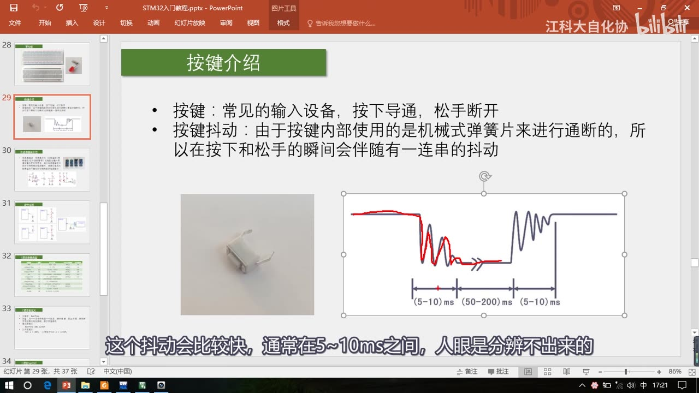
图 3：按键抖动波形——按下/松手瞬间抖动约 5～10ms，稳定按下 50～200ms
2. 传感器模块（套件里的 4 种）
套件提供四种传感器模块：光敏电阻传感器、热敏电阻传感器、对射式红外传感器、反射式红外传感器。它们的电路结构和工作原理差不多。
- 传感器元件（光敏电阻、热敏电阻、红外接收管等）的电阻会随外界模拟量变化：光线越强光敏电阻越小、温度越高热敏电阻越小、红外线越强红外接收管越小。
- 电阻的变化不容易直接观察，所以把传感器元件和定值电阻串联分压，得到模拟电压输出（AO）；再通过电压比较器二值化，得到数字电压输出（DO）。
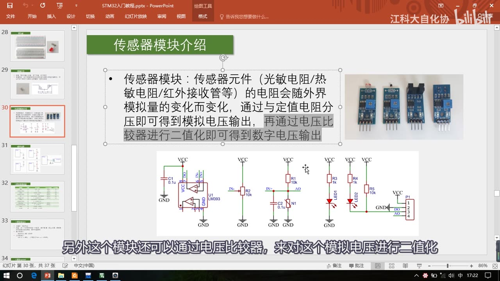
图 4：传感器模块介绍——四种模块实物、分压电路、LM393 比较器与 DO/AO 输出
2.1 模拟输出 AO：分压电路
- 模块基本电路里，N1 是传感器元件代表的“可变电阻”，阻值随光线/温度等模拟量变化；R1 是与 N1 分压的定值电阻（图中 10k）；R1 和 N1 串联，一端接 VCC、一端接 GND，中间点就是分压输出。
- C2 是滤波电容：一端接电路、一端接地，用来滤除干扰、保证输出电压平滑。分析电路时可以先把滤波电容“抹掉”，因为它不是电路的主要框架。
- 分压结果：N1 阻值变小 → 下拉作用增强 → AO 电压被拉低；极端情况 N1=0 → AO 被完全下拉到 0V；N1 阻值无穷大（相当于断路）→ AO 被 R1 拉高到 VCC。
- 上下拉“杆子+弹簧”模型（作者总结的理解方法）：
- 把中间的输出电压想象成屋里一根水平杆子的高度；
- R1 是拴在屋顶的上拉弹簧（往上拉），N1 是拦在地面的下拉弹簧（往下拉）；
- 电阻阻值越小，弹簧“拉力”越强；两个弹簧对抗，杆子往拉力强的一端偏移；
- 两弹簧力度一致 → 杆子居中 → 输出 VCC/2；
- 上面阻值小 → 输出电压变高；下面阻值小 → 输出电压变低；
- 上下电阻都为 0 → 两个无穷大的力对抗 → 电源短路，要避免。
- 以后看到上拉/下拉电阻（弱上拉、强上拉、弱下拉、强下拉），都可以用这个模型分析；“强/弱”就是阻值大小、弹簧弹力大小。
2.2 数字输出 DO：LM393 电压比较器
- LM393 是电压比较器芯片，内部有两个独立的电压比较器电路，其余是 VCC/GND 供电（另有电源滤波电容）。
- 比较器（运算放大器的一种用法）：同相输入端 IN+ 电压 > 反相输入端 IN- 电压 → 输出瞬间升高到 VCC；IN+ < IN- → 输出瞬间降低到 GND，从而把模拟电压二值化。
- 实际接法：IN+ 接 AO（模拟电压），IN- 接电位器分压得到可调阈值电压；两电压比较结果就是 DO 数字输出。
- DO 输出处还有 R5 上拉电阻，保证默认输出为高电平。
- 模块上两个指示灯：左边电源指示灯（通电就亮）、右边 DO 输出指示灯（低电平点亮、高电平熄灭）。
- 排针 P1 引出：VCC、GND、DO、AO 四个引脚。
- 四种模块的区别：N1 换成光敏电阻/热敏电阻/红外接收管；红外模块多一个红外发射管——对射式用于检测通断（阈值不需要多调），反射式向下发射红外光、检测反射光，可用于寻迹小车。
3. 按键的 4 种接法
| 接法 | 电路 | 按下 | 松手 | 输入模式要求 |
|---|---|---|---|---|
| ① 下接（最常用） | PA0 — K1 — GND | 低电平 | 悬空/上拉后高电平 | 必须上拉输入，否则悬空电平不确定 |
| ② 下接 + 外部上拉 | PA0 — K1 — GND，PA0 另接 R1 到 3.3V | 低电平 | 高电平（被上拉） | 可浮空输入或上拉输入（内外上拉共同作用，高电平更稳，但拉低损耗更大） |
| ③ 上接 | PA0 — K1 — 3.3V | 高电平 | 低电平 | 必须下拉输入（不是所有单片机都有） |
| ④ 上接 + 外部下拉 | PA0 — K1 — 3.3V，PA0 另接 R1 到 GND | 高电平 | 低电平 | 可下拉输入或浮空输入 |
- 上面两种（下接）按键按下时引脚是低电平、松手是高电平；下面两种（上接）按下是高电平、松手是低电平。
- 左边两种接法必须要求引脚能配置成上拉/下拉输入模式（否则悬空）。
- 一般都用上面两种（下接），和 LED 一样属于电路设计的习惯和规范；下面两种用得少，作为扩展了解。
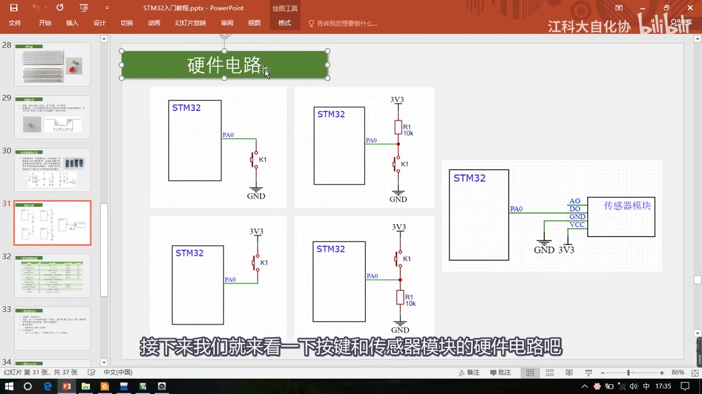
图 5：按键的 4 种接法总览——上两行下接（按下低）、下两行上接（按下高）
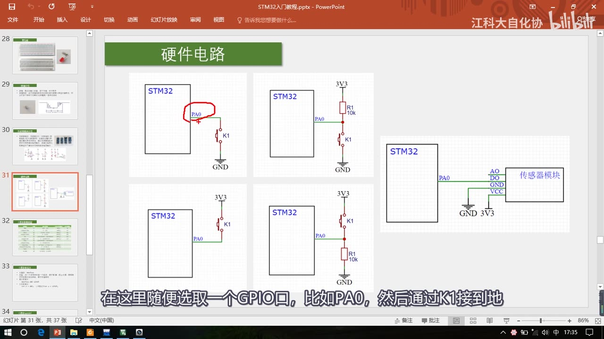
图 6：最常用的下接接法——PA0 通过按键 K1 接 GND，PA0 必须配置为上拉输入
4. 传感器模块的接线
- VCC → 3.3V、GND → GND 供电；
- DO 数字输出 → 任意 GPIO（如 PA0），用于读取数字量（下一集就用它）；
- AO 模拟输出以后学 ADC 模数转换器时再用，本课不接。
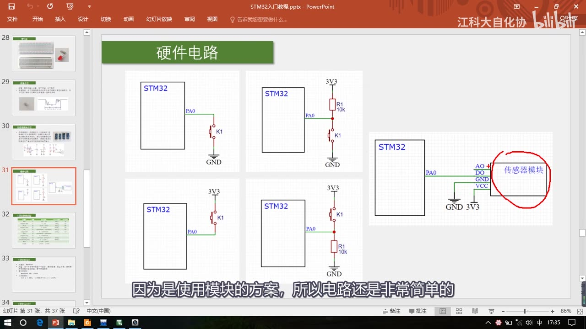
图 7：传感器模块接线——VCC/GND 供电，DO 接 GPIO，AO 留到 ADC 再用
5. C 语言补充（库函数里反复出现的知识）
本集后半段专门补 C 语言：数据类型、宏定义、typedef、结构体、枚举（指针另有专门一期视频）。这些不是 C 语言的根本语法，但库函数里到处都在用。
5.1 数据类型与 stdint
- C 语言基本类型（关键字 / 位数 / 范围）：
| 关键字 | 位数 | 表示范围 |
|---|---|---|
char |
8 | -128 ～ 127 |
unsigned char |
8 | 0 ～ 255 |
short |
16 | -32768 ～ 32767 |
unsigned short |
16 | 0 ～ 65535 |
int |
32 | -2147483648 ～ 2147483647 |
unsigned int |
32 | 0 ～ 4294967295 |
long |
32 | 同 int |
unsigned long |
32 | 同 unsigned int |
long long |
64 | 约 -9.2e18 ～ 9.2e18 |
unsigned long long |
64 | 0 ～ 1.8e19 |
float |
32 | -3.4e38 ～ 3.4e38 |
double |
64 | -1.7e308 ～ 1.7e308 |
- 注意：STM32 里
int是 32 位（51 单片机里 int 是 16 位，别搞混）；long也是 32 位，想要 64 位要用long long；float/double都是带符号的，没有无符号版本。 - stdint.h 新名字：
int8_t/uint8_t/int16_t/uint16_t/int32_t/uint32_t/int64_t/uint64_t——本质就是char/unsigned char/… 换了个名字（用 typedef 重命名），以后写程序按推荐用这些新名字。 - ST 库函数以前用的老名字
u8/u16/u32仍然保留（为了兼容老代码，新版库函数也支持），但推荐用 stdint 的官方名字。
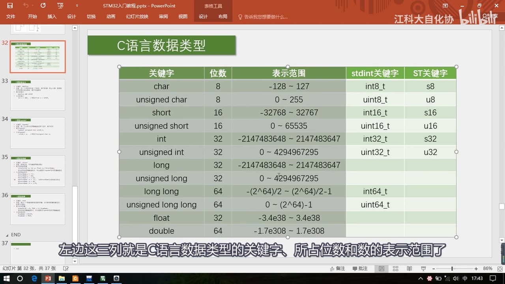
图 8：C 语言数据类型表——关键字、位数、表示范围，以及 stdint 和 ST 的新旧名字对照
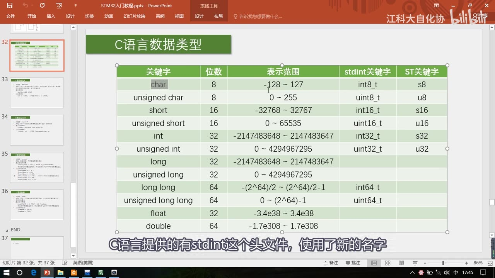
图 9：数据类型表——右侧两列是 stdint 新名字与 ST 旧名字的对照（同一张表的进一步讲解）
5.2 宏定义 #define
- 关键字
#define；用途：①用一个字符串代替一个数字，便于理解、防止出错（比如用 1/2/3 表示上拉/下拉/浮空输入，直接用数字很难记）；②提取程序中经常出现的参数，便于快速修改（比如GPIO_Pin_0在程序里出现很多次，改的时候只改定义处）。 - 定义：
#define ABC 12345；引用：int a = ABC;等价于int a = 12345; - 库函数里
GPIO_Pin_12（实际是0x1000）、GPIOB、RCC_APB2Periph_GPIOB都是宏定义，起“改个好记的名字”的作用。
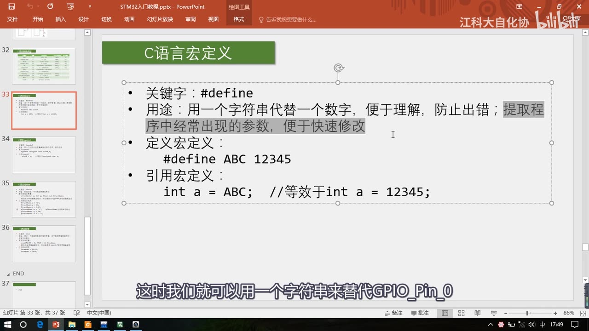
图 10：C 语言宏定义——#define 的用途、定义与引用
5.3 typedef
- 关键字
typedef；用途：把比较长的变量类型名换个短名字，便于使用。 - 定义：
typedef unsigned char uint8_t;（末尾要加分号）；引用：uint8_t a;等价于unsigned char a; - 和宏定义的区别：
- 新名字的位置相反：宏定义的新名字在左边，typedef 的新名字在右边；
- 宏定义不需要分号，typedef 必须加分号；
- 宏定义什么名字都能换（无脑替换），typedef 只能给变量类型换名，会做检查，更安全。
- 重命名是增加新名字，原来的名字仍然能用；
uint8_t、uint16_t等就是 typedef 重命名的类型。
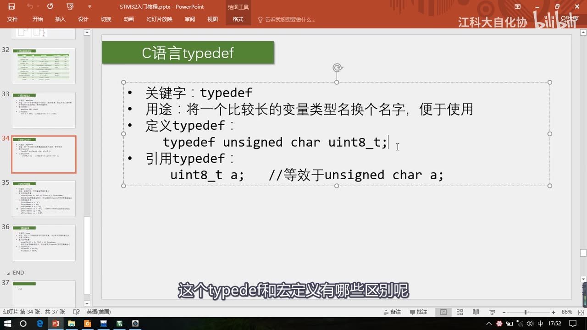
图 11：C 语言 typedef——给长类型名换短名字，以及与宏定义的区别
5.4 结构体 struct
- 数据类型分基本类型和组合类型：数组是同类型数据的集合，结构体是不同类型数据的集合。
- 结构体作用：数据打包——把不同类型的变量组合在一起，便于管理和传递，也便于理解程序。
- 定义与引用：
struct { char x; int y; float z; } StructName; // 定义结构体变量 StructName
// 或者配合 typedef（库函数常见写法）：
typedef struct { char x; int y; float z; } StructName_t;
StructName.x = 'A'; // 引用：变量名 . 成员名
StructName.y = 66;
StructName.z = 1.23;
pStructName->x = 'A'; // 指针引用：指针名 -> 成员名（pStructName 是结构体的地址）
- 内存上就是一块“打包”区域，里面依次存放 x/y/z。
- 库函数里的用法：
GPIO_InitTypeDef就是 typedef 出来的结构体类型，GPIO_InitStructure是结构体变量；先把参数写进三个成员，再GPIO_Init(GPIOA, &GPIO_InitStructure)把结构体地址传进去（地址传递）；GPIO_Init函数内部用GPIO_InitTypeDef*指针接收，引用成员时用->（如GPIO_InitStruct->GPIO_Mode）。 - 为什么要这样传：参数多的时候（十个八个）直接列参数不方便管理，统一用结构体打包传递；函数里再“拆包”读取成员。
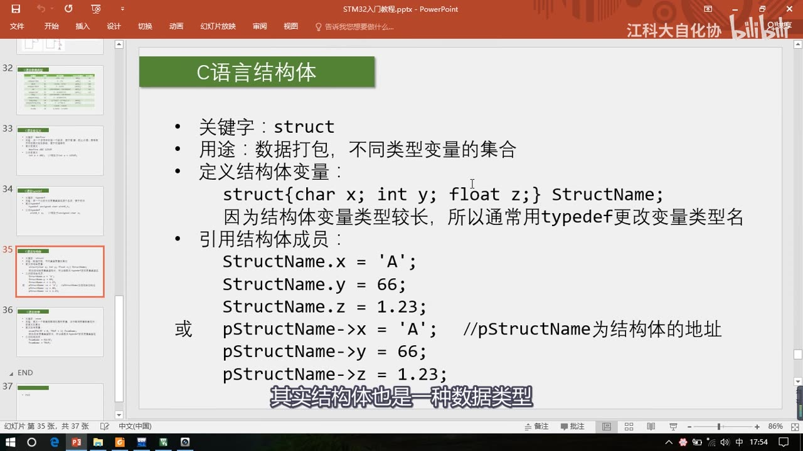
图 12：C 语言结构体——数据打包、定义与两种成员引用方式（. 和 ->）
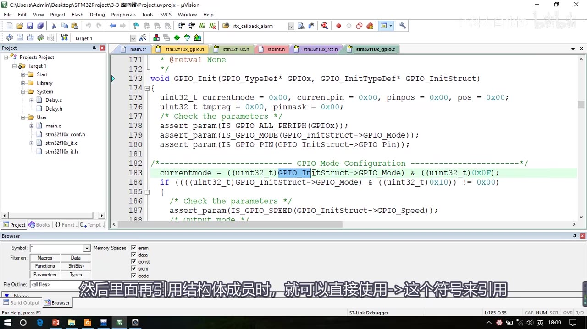
图 13：库函数里的结构体——GPIO_Init 内部用 GPIO_InitTypeDef 指针接收，用 -> 引用成员*
5.5 枚举 enum
- 关键字
enum；用途：定义一个取值受限制的整型变量——限制变量只能取枚举列表里的值。 - 例子：定义存星期的变量，理论上只能取 1～7；如果定义成普通整型，存 8 也不会被拦住。用枚举就能把取值范围限制住：
enum week { MONDAY = 1, TUESDAY = 2, WEDNESDAY = 3, /* ... */ };
// 配合 typedef：
typedef enum { MONDAY = 1, TUESDAY, WEDNESDAY } week_t; // 顺序递增的值可以省略，编译器自动补
week_t week;
week = MONDAY; // 只能赋枚举列表里的值；DevC++ 对 week = 8 不报错，Keil 里赋非法值会警告“枚举中混入了其他类型”
- 枚举值可以省略赋值（编译器按顺序自动补）；typedef 给枚举换名字更方便。
- Keil 里给枚举变量赋非法值会报警告；直接赋
0也可能报（0 是枚举值但类型不匹配，需要强制类型转换）。 - 枚举本质约等于一个宏定义的集合；枚举值也可以赋给普通 int 变量（如
int a = ENABLE;只有“定义了没使用”的警告，没有类型错误）。 - 库函数里
ENABLE/DISABLE、GPIO_Mode_*等都是枚举值，所以GPIO_InitStructure.GPIO_Mode = GPIO_Mode_Out_PP;是枚举赋值。
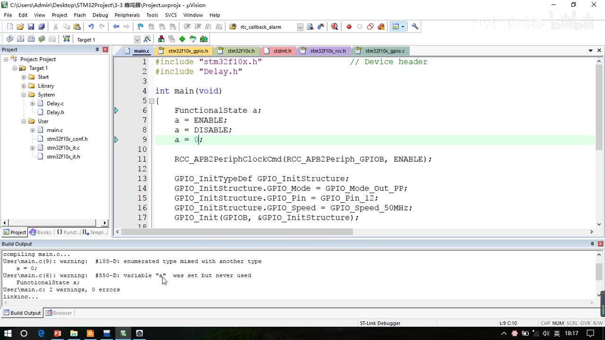
图 14：Keil 里给枚举变量赋非法值（a = 0）→ 警告 #188-D“enumerated type mixed with another type”
6. 坑与易错点
- 按键必须消抖：抖动 5～10ms，程序里要加延时过滤，否则一次按下可能被识别多次。
- 下接按键必须上拉输入：按键一端接 GND 时，松手引脚悬空、电平不确定；配置成上拉输入才能在松手时稳定读到高电平。
- 没有外部上拉/驱动的引脚不能悬空：浮空输入本身是合法模式，但接法②④有外部上拉/下拉时可以浮空；接法①③这类会悬空的场合必须配置上拉/下拉输入。
- STM32 的 int 是 32 位：51 单片机是 16 位；
long也是 32 位，64 位要用long long。 - u8/u16 是老名字：新代码推荐 stdint 的
uint8_t/uint16_t。 - 宏定义 vs typedef：宏不需要分号、什么都能换；typedef 必须加分号、只能给类型换名（有检查）。
- 结构体成员访问：变量用
.，指针用->（函数传的是地址时用->）。 - 枚举只能取列表里的值：赋非法值会警告；赋 0 一般也要强转成枚举类型。
- 传感器模块先用 DO：AO 模拟输出要等学 ADC 再用；DO 判断阈值可用蓝色电位器调。
- 上下拉电阻不能都为 0：相当于电源短路。
时间轴
| 时间 | 内容 |
|---|---|
| 0:00 | 现象演示：按键控制 LED（两按键互不影响）、光敏传感器控制蜂鸣器（挡光响/拿开停） |
| 1:22 | 本小节内容：GPIO 输入硬件电路 + C 语言补充（指针另有专门视频） |
| 2:34 | 按键介绍：按下导通/松手断开；按键抖动 5～10ms，需延时过滤 |
| 4:05 | 传感器模块介绍：四种模块、电阻随模拟量变化→分压→比较器二值化 |
| 5:14 | 模块电路（模拟部分）：N1+R1 分压、C2 滤波 → AO 模拟输出 |
| 7:13 | 上下拉“杆子+弹簧”模型：强弱指阻值大小，两力平衡输出 VCC/2 |
| 9:42 | 模块电路（数字部分）：LM393 比较器、电位器阈值、DO、指示灯、排针 |
| 12:46 | 按键的 4 种接法：下接/下接+外部上拉/上接/上接+外部下拉 |
| 16:18 | 传感器模块接线：VCC/GND/DO，AO 留到 ADC |
| 16:50 | C 语言数据类型：位宽与范围，STM32 的 int 是 32 位 |
| 19:03 | stdint 新名字：int8_t～uint64_t，u8/u16 是兼容旧名字 |
| 22:30 | 宏定义：#define 的两种典型用途 |
| 24:40 | typedef：给类型改名，与宏定义的区别 |
| 26:20 | 结构体：定义、引用、指针 ->、库函数 GPIO_Init 传参 |
| 37:30 | 枚举：限制取值范围（星期例子）、Keil 警告与强转 |
| 43:00 | 总结：这些 C 语言知识为了更好管理复杂工程；下一小节写 GPIO 输入代码 |
存疑
- 本集文本来自画面硬字幕的 OCR（PP-OCRv4，source=subtitle-ocr），不是 ASR；常见 OCR 错字：上拉/下拉偶被识别成“比拉”、阈值→“國值”、指示灯→“指录灯”、TUESDAY→“TUERSAY”等，已按画面和上下文校正。
- 本集只演示现象、不讲代码；按键控制 LED、光敏控制蜂鸣器的代码在下一集 [3-4] 讲。
- 光敏模块的 AO 模拟输出本集只讲原理，没有接单片机（学 ADC 时才用）；DO 输出的阈值用电位器调。
- 视频提到的“51 单片机 AD/DA 那节”“指针教程”是作者其它视频，本笔记不展开。
- 数据类型的位宽/范围以视频 PPT 为准（不同编译器和芯片可能略有差异）。